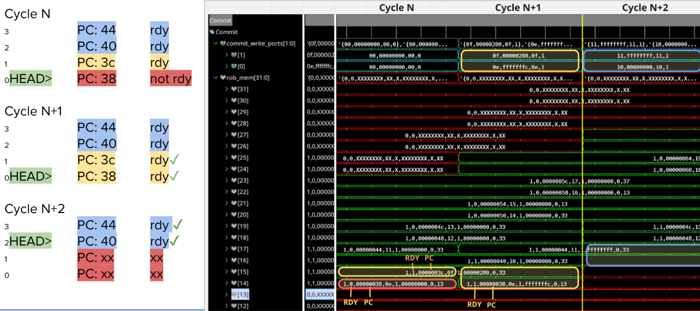

Stage 8: Commit¶
Commit turns speculative work into architectural state in order, up to two instructions per cycle. The ROB also acts as the core’s central controller: it assigns instruction IDs, tracks completion, authorizes stores, serializes system instructions, raises traps and redirects the front end. The RTL is rob.sv and csr.sv in rtl/cpu/8-commit/.
ROB Structure¶
32 circular entries. Storage splits across arrays because different producers write different fields in different cycles:
Array |
Contents |
Writers |
|---|---|---|
status |
valid, ready, exception |
dispatch, completion, retirement, flush |
result |
branch taken and target, for training |
branch resolves |
payload array |
PC, immediate, destinations, controls, FTQ and CSR IDs |
dispatch |
CSR value |
proposed CSR write |
CSR unit |
flags |
six set-once flags (CSR write, store authorized, atomic resolved, uncached, replay, repair) |
one writer each |
One-hot head. The head pointer stays binary for age arithmetic. A registered one-hot copy selects the head’s state with a masked OR, avoiding a 32-way priority chain.
Flags in LUT RAM. Each flag splits into banks with one writer each, and its value is the XOR of the banks. Allocation writes the XOR of the setter banks, clearing the flag; a setter writes the inverse of the other banks, setting it. Readers also check valid, so stale flags on free entries have no effect and the banks need no reset.
Preloaded free slots. A free tail slot loads the incoming payload and status every cycle, and only its valid bit waits for the late dispatch handshake.
Register values live in the physical register file, outside the ROB.
Allocation¶
Both rename requests are granted together or not at all. An entry allocated with an exception is complete at once and waits only to reach the head.
An interrupt attaches to the oldest entry’s PC. A pending interrupt blocks allocation while work is in flight; with an empty ROB, one group enters to provide a precise resume PC. The interrupt request is registered in the CSR bank and suppressed on the cycle after a CSR write or trap, so the instruction after csrc mstatus, MIE sees the updated enable.
Retirement¶
Up to two per cycle, in order. An entry retires when it is valid and complete, when an uncached store has its memory response, and when a FENCE.I has finished cache maintenance.


The waveform shows four ROB entries at PCs 0x38 to 0x44. In cycle N the entries at 0x3c, 0x40 and 0x44 are complete while the head entry at 0x38 is still waiting, so nothing commits. In cycle N+1 the head completes, and the two commit write ports retire 0x38 and 0x3c together. In cycle N+2 the head has advanced two entries, and 0x40 and 0x44 retire. Results arrive out of order; the committed register writes leave in program order, two per cycle.
Branches. The predictor accepts one outcome per cycle, so one control op retires per cycle. A head branch can pair with a younger non-control instruction when its FTQ ID equals the registered dequeue index and its repair flag is clear. That is a 4-bit compare; the predictor’s own check is two 32-bit compares on the retire path, and an assertion confirms they agree. CSR, system, fence and faulting instructions retire alone.
Stores.
A cacheable store retires when ready, in either slot, and sends its token as it retires. It stays in the store queue to forward and drain.
An uncached store waits for its write response, which turns an AXI write error into a precise fault.
An atomic counts as uncached and waits for its response and old value.
A younger load in slot 1 holds for the first cycle a new store is ready, because the violation report for that store arrives two cycles after the store resolves.
Load Replay¶
When the load queue reports a load that ran ahead of an overlapping older store, the ROB marks it; a report arriving in the same cycle also counts, so the load cannot retire with stale data. At the head, the ROB redirects to the load’s PC, which flushes everything as FENCE.I does, and the load reexecutes. An exception or interrupt at the head takes precedence.
Exceptions¶
Reports arrive out of order, and the ROB keeps the oldest by distance from the head:
if (report.valid && (!oldest.valid ||
((report.rob_tag - rob_head_q) < (oldest.rob_tag - rob_head_q))))
oldest_exception_d = report;
Reports are registered on arrival, which keeps decode, rename, the branch compare and the memory response off the tracker path. A flush discards all reports, so wrong-path faults never reach the head.
A trap fires when the head is complete, faulting and matches the oldest report. The trap event is registered, which keeps the front-end redirect off the commit path. While it is valid, allocation and commit stop, and the faulting entry never counts as retired, so it changes neither the committed RAT nor minstret.
Interrupts¶
Interrupts are taken between instructions with mepc set to the head’s PC, so the interrupted instruction reexecutes. Synchronous exceptions take precedence, and a head that has authorized a store or started FENCE.I finishes first. Priority order is on the traps page.
FENCE.I¶
head is FENCE.I -> wait for stores to drain -> request maintenance
L1 subsystem -> write back dirty D-cache lines
-> invalidate D-cache
-> invalidate I-cache
-> done
ROB -> retire -> redirect to pc + 4
The fence waits for every authorized store to drain, because cacheable stores retire before reaching the D-cache and code stores must be part of the writeback. The redirect to pc + 4 discards everything fetched past the fence, which supports self-modifying code and host program loading.
CSR Bank¶
csr.sv holds machine-mode state and the current privilege level. ISA describes the minimal U-mode.
Register |
Notes |
|---|---|
|
64-bit, with high halves |
|
|
|
zero on RV32 |
|
fixed |
|
read-only view of the platform |
|
writable, word aligned where required |
|
|
|
read-only zero |
trap: mepc <- epc, mcause <- cause, mtval <- tval,
MPIE <- MIE, MIE <- 0, MPP <- current mode, mode <- M
mret: MIE <- MPIE, MPIE <- 1, mode <- MPP, MPP <- U
Retire counting is registered, so the commit cycle drives no 64-bit adder, and reads add the pending count so minstret stays exact. A fused pair occupies one entry and counts as two instructions.
assign minstret_visible = minstret_r + 64'(retire_count_q);
The FPGA build uses that +. Without XILINX defined, a prefix adder replaces it for the ASIC estimate.
Recovery¶
Design Decision: Recovery at Retirement vs Rename Checkpoints¶
ORCA keeps no rename checkpoints, and the ROB never rewinds.
Execute detects a mispredict and redirects only the front end: fetch restarts on the correct path, the FTQ drops younger entries, and the global history and RAS pointer roll back. The ROB sets the branch’s repair flag.
Rename stops accepting instructions, and the correct path collects in the front end.
The repair branch retires alone from the head. On the next cycle the back end flushes, rename copies the committed RAT over the speculative RAT, and the correct path enters.
Rename allocates in program order, so once the branch retires every remaining back-end instruction belongs to the wrong path and a full flush is exact. When two branches mispredict close together, the older one takes precedence. A checkpoint design adds branch masks to every uop and squash logic to every queue and functional unit; here the front end refills while the back end drains. The measured comparison is in results.
The flush zeroes the ROB pointers and invalidates every entry; the committed RAT, physical values, CSR bank and committed stores remain. Traps, MRET, FENCE.I and load replays use a commit-time flush that clears the front and back ends in the same cycle.
ROB tags wrap, so every age comparison subtracts the head from both tags, which yields distances from the oldest instruction and needs no wrap bit:
(entry.dest_tag - rob_head) > (recovery.rob_tag - rob_head)
Limits¶
Serializing instructions limit commit to one per cycle.
32 ROB entries and 32 free physical registers bound the window.
One trap or
MRETin flight, since the registered trap blocks allocation.No
medeleg,mideleg, vectoredmtvecor supervisor mode.